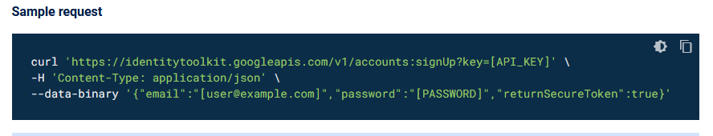
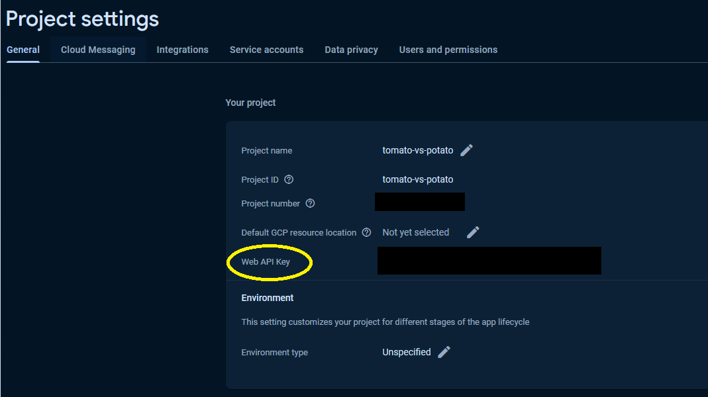
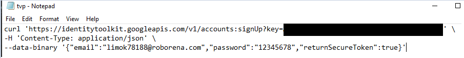
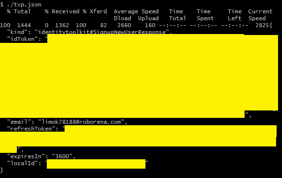
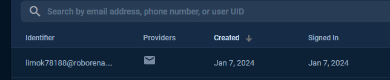
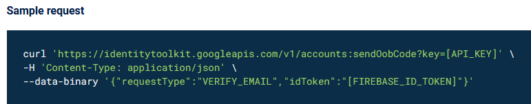
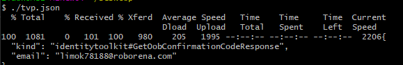
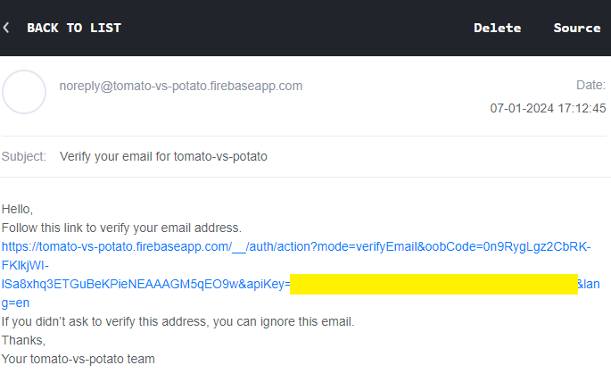

First Android Game - Part 23 - Firebase APIs
Jan 07, 2024
This is part 23 of making my first Android Game. If you missed part22, you can find it here.
NOTE: I am using firebase SDK v 11.6.0. Before we continue adding more data. I want to know if I can manually create emails, verify emails and so forth using APIs. I am following this Firebase Auth Rest API First I can create a new email and password user by issuing an HTTP POST request to the Auth signupNewUser endpoint. This will allow the email to be registered and appear in Firebase Authentication. The endpoint is https://identitytoolkit.googleapis.com/v1/accounts:signUp?key=[API_KEY] The sample request looks like the below

The API_KEY which refers to the Web API Key, which can be obtained on the project settings page in your admin console.

I replaced the API key,email and password.

I would a get a response. Containing idtoken, email, refresh token,expires in and local id.

Firebase Authentication would show the email I just created

The id token is the Firebase id token of this user. I can use this token to send a verification email. The endpoint for verification email is https://identitytoolkit.googleapis.com/v1/accounts:sendOobCode?key=[API_KEY] The sample request is as shown below

I placed the sample code in a txt file and give the file name with a json extension. This is the response

I would see the email verification. Notice in the email there is oobCode key in the email link. I can use this oob to manually verify the email - we won't get to that yet as I want to do more testings before the email is verified

Recent blogs
See all blogs